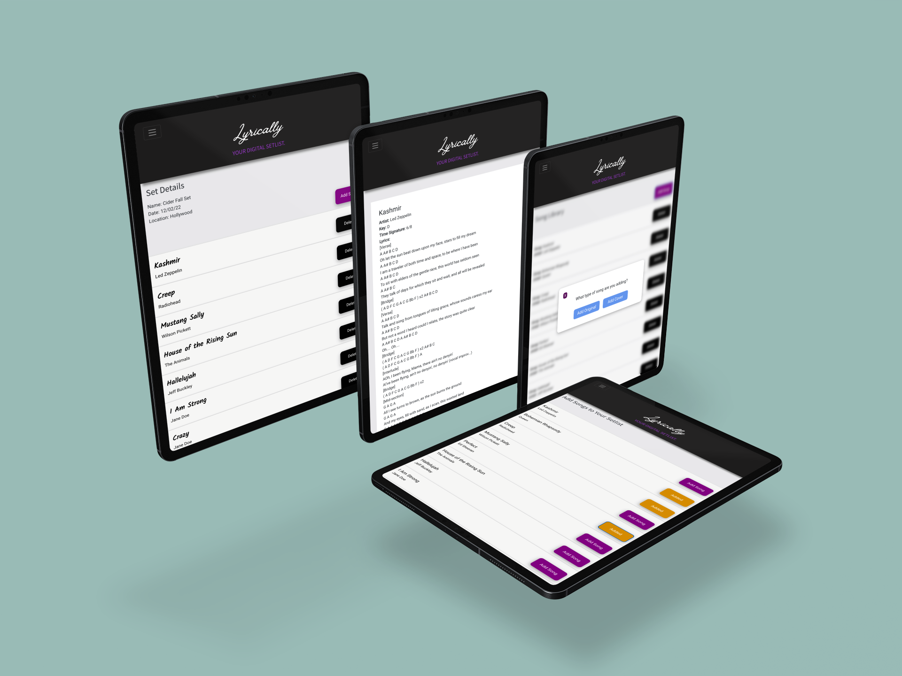

My Role
I am the creator, designer and developer of this app.
Solution
To create an app that bridges the gab between digital setlists aimed at songwriters and those marketed to cover bands.
UX / UI / Front-End
Lyrically was my frontend development capstone project at Nashville Software School. The objective of this was to build a functioning app in React.js that allows the user to create, read and destroy. I also took the initiative collect data and conduct user interviews to create a case study before developing this application. Below, I have detailed my design process and included video a walkthrough of my developed application.
When songwriters gig, they are often required to add cover songs (other people’s songs) to their setlists of original material in order to get paid. Currently, there are apps to create setlists for cover songs and there are apps to create setlists for original songs, but there are no apps that allow the user to combine both covers and original material. So musicians often have to switch between multiple apps while gigging and rehearsing. I designed Lyrically as a solution to this problem.
I am the creator, designer and developer of this app.
To create an app that bridges the gab between digital setlists aimed at songwriters and those marketed to cover bands.


To provide a way for musicians to store their music for both covers and original songs in one place, while being able to easily arrange and change setlists.


Let's meet the users


The potential users of Lyrically had indicated that while they were content with the ease of use of the current competitive apps, they were unhappy that they were unable to store a variety of song types, such as cover songs and original songs.


The two biggest constraints of this project were time and money. Due to a limited budget, I was only able to attain two user interviews, therefore not retrieving as much data and user input as I would have liked. The other constraint was time. Due to the limited time constraint, I was not able to do usability testing.


After studying some of the brands that the users relate to, I noticed that several had black in them. Therefore I decided to brand Lyrically with black and purple.
I had two weeks to take this application from ideation to a fully functioning product. Please feel free to explore the code in the link below.
Video walkthrough of Lyrically
Photos of Developed Application